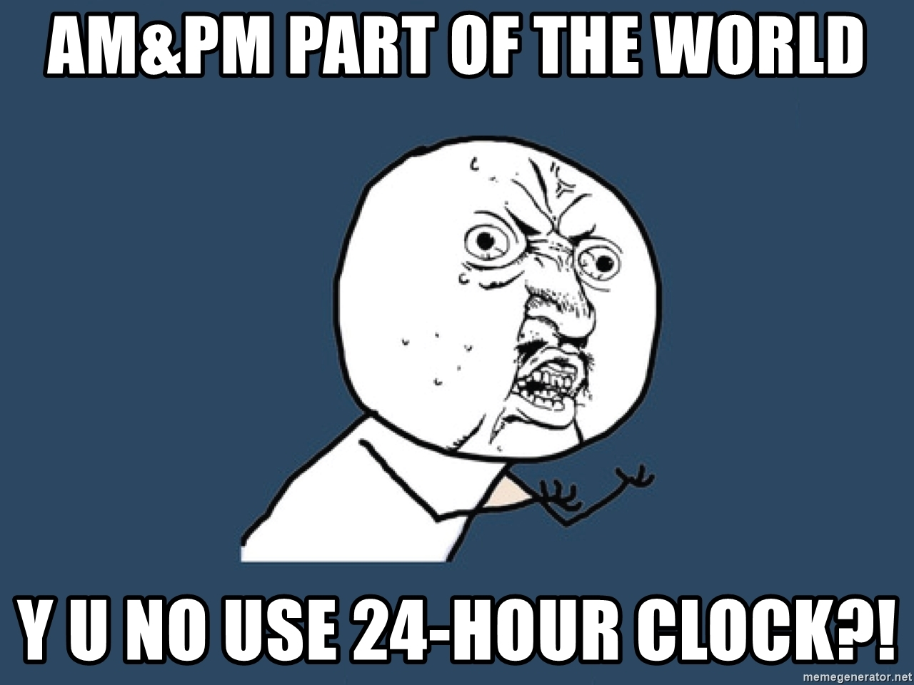

One thing that I don't really understand about the world is how people can make it unnecessarily complicated. It seems like us human beings tend to make things harder for ourselves cuz we can.
Take the 12-hour clock system people use nowadays as an example. Why would any sufficiently working brain decide on dividing the 24 hours in the day into two 12s? By doing so, you are just adding more ambiguity to your lives. Now, people have to deal with A.M. and P.M. that they don't even know their meanings. Why would anyone assign a specific region of his brain to handle such stupid things? This is completely inefficient. Instead of doing this shit, just be a normal creature and divide your day into equal 24 parts and assign every one of them a number. Not only this will make it easier for kids and even adults to understand, but also it will solve the weird misunderstandings that arise from A.M. and P.M. conflicts.
I myself have always had a problem with the clock system since I was a kid. It was hard to remember what is what when it comes to A.M. and P.M. and I have always thought that this is only adding a complicity layer on something that was supposed to be simple. I'd ask adults around me if A.M. meant night or day and, for some reason, I was never able to remember the difference after a while.
The irony about the whole thing is that only a few portion people actually know what does A.M. and P.M. stand for. They both stand for the Latin words "ante merīdiem" and "post merīdiem" which I doubt that if I showed these words to anyone who uses the 12-hour format, he will be able to recognize it.
I am using the 24-hour everywhere. My laptop, my phone, my watch, even this website is using the 24-hour system as a clock system. It's easier for me and helps preserve my brain computing power to be used in something more significant.
Please help the world become a better place and start using 24-hour clock. Peace out!